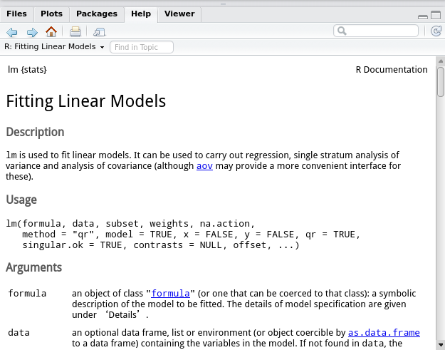

这个"从入门到放弃"系列是为了应付eth的computational statistics这门课... 对R无爱...
terminology
首先在stat里面有一些叫法和以前不太一样:
predictor variable: 就是机器学习里面说的feature (Xi)design points: 是机器学习里的训练数据(X1...Xn)response variable: 要预测的变量(y)
Rstudio
这个是用R编程的标配, 确实很方便, 不用可惜. 另外R markdown也不错, 可以边写markdown边运行代码, 建议编辑器窗口里新建rmd文件.
- 默认有四个窗口: 编辑器, 变量, 命令行, 画图/帮助.

快捷键
一些常用的快捷键:
alt+-: 用于输入赋值符号<-- (编辑器窗口中)
ctrl+enter: (在console里)执行光标所在的行, 等同于按钮"run" - (r markdown编辑器窗口中)
ctrl+alt+I: 插入一个R代码的chunk - (r markdown编辑器窗口中)
ctrl+shift+enter: 运行当前code chunk - (选中一个函数名)
F1: 在右下角帮助窗口里显示相关文档.
R 文档
获得文档也可以输入: ?funcname 或者 help(funcname) 输入 ??funcname 则是非精确匹配的查找.
另外获得例子可以使用demo()/example(), 例如:
demo(graphs)
example("plot")
下面是一个R文档的例子(运行?lm得到):

章节Arguments里介绍了每个参数的意义和用法, 然后往下翻还有一个Values章节:
Values里的每一项是这个函数的返回值(object)的内容, 比如要获得一个lm object的参数, 只需要: lm_obj$coefficients
R 101
首先, R非常让我非常不习惯的一点是: 在R里面, dot.只是一个普通的字符, 它的用法和python里的下划线_类似, 只是起到分割函数名里的单词而已... 在其他语言里, dot.一般都是用来调用函数或者获取field的. 所以见到cv.ss之类的名字的时候别以为是变量cv的一个field... 这个就相当于python里一个叫cv_ss的变量...
获取一个object的field, 在R里面是用dollar$(另外R里的object似乎并没有method!) .
另外, 赋值使用的是<-, 等号似乎只在指定函数参数的时候用到.
常用函数
接下来列举一些常用的函数, 它们的详细用法可以看文档...
c(...)
combine values into vector/list. 注意的是它会自动把list/vector参数展开:
> c(1,2,3)
[1] 1 2 3
> c(c(1,2),3)
[1] 1 2 3
利用这个性质, 可以这样向一个列表(向量)添加东西:
l <- c(l, new_element)
numeric(l)
生成长度为l的(全0)向量. 经常用这个命令生成一个"数组" 然后用一个循环向里面写入东西.
> numeric(5)
[1] 0 0 0 0 0
获取向量第i个元素: vec[i](btw, R index是从1开始的)
matrix(v, nrow=nr, ncol=nc)
生成一个矩阵, 全部初始化为v, nr行, nc列.
获取i行j列: mat[i,j]
获取第i行: mat[i,] 第j列: mat[,j]
seq(from, to, by)
类似py的range函数... 另外1:n是seq(1,n,by=1)的简写
> seq(1,10, 2)
[1] 1 3 5 7 9
> 1:5
[1] 1 2 3 4 5
-
for循环:
for(i in 1:n){... -
rep
直接看例子:
> rep(1, 10)
[1] 1 1 1 1 1 1 1 1 1 1
> rep(c(1,2), 10)
[1] 1 2 1 2 1 2 1 2 1 2 1 2 1 2 1 2 1 2 1 2
> rep(c(1,2), each=10)
[1] 1 1 1 1 1 1 1 1 1 1 2 2 2 2 2 2 2 2 2 2
length(lst)
用来获得一个向量/列表的长度
dim(mat)
获得一个矩阵的维度, 类似numpy的mat.shape
cbind/rbind
按行/列合成矩阵
> cbind(c(1,2),c(3,4))
[,1] [,2]
[1,] 1 3
[2,] 2 4
str/summary
输出一个obj的信息
cat/print
打印, 区别是cat可以依次打印多个字符串/对象
which/which.max/which.min
which.max/min类似于argmax/min
> which(2>c(1,2,1))
[1] 1 3
> which.max(c(1,2,1))
[1] 2
> which.min(c(1,2,1))
[1] 1
paste
这个函数可以用来给一个数组的前面加一个前缀, 看例子:
> paste("a", 1:5, sep="-")
[1] "a-1" "a-2" "a-3" "a-4" "a-5"
- operators: with
%
一些运算符需要用%包裹起来, 比如:
- %%: 取模
- %*%: 矩阵相乘
- %/%: 整数相除(类似java里int的除法)
- a %in% b: 判断元素是否属于b
Disqus 留言